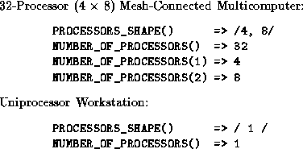

![[DBPP]](pictures//asm_color_tiny.gif)


![[Search]](pictures//search_motif.gif)
In this section, we discuss several miscellaneous aspects of HPF; we also list HPF features not covered in this book.
HPF introduces a small set of intrinsic functions in addition to those defined in F90. The two most relevant to parallel program design are the system inquiry functions NUMBER_OF_PROCESSORS and PROCESSORS_SHAPE. These functions allow a program to obtain information about the number of physical processors on which it executes and the topology connecting these processors. This information can be used to write programs that run efficiently on varying numbers of processors and processor configuration. The functions are modeled on the F90 inquiry functions SIZE and SHAPE, respectively, and provide a view of the underlying computer as a rectilinear, multidimensional processor array. A call to NUMBER_OF_PROCESSORS has the general form NUMBER_OF_PROCESSORS(dim)
where dim is an optional argument. A call to this function returns the number of processors in the underlying array or, if the optional argument is present, the size of this array along a specified dimension. A call to PROCESSORS_SHAPE has the following general form. PROCESSORS_SHAPE()
It returns an array with rank (dimension) one and with size the rank of the underlying processor array. The i th element gives the size of the underlying array in its i th dimension.

Figure 7.8: Examples of values returned by HPF system inquiry intrinsic
functions.
The representation of a particular physical computer as a processor array is implementation dependent and not specified in HPF. Two representative examples are presented in Figure 7.8. System inquiry functions can be included in array declarations and HPF directives, hence permitting a program to declare abstract processor arrays that match available physical resources. For example, in the following code the first directive declares an abstract processor array P with size equal to the number of physical processors. The F90 inquiry function SIZE is then used to declare an integer array Q with size corresponding to the rank (dimension) of the physical processor array.
!HPF$ PROCESSORS P(NUMBER_OF_PROCESSORS())
integer Q(SIZE(PROCESSORS_SHAPE()))
Both F77 and F90 allow programmers to write programs that depend on a linear storage model, that is, a view of memory as linear, one dimensional, and sequentially addressed. This is the case if a program depends on storage association, using common or equivalence statements to align storage locations. (This might be done to reuse storage, for example.) It is also the case if a program relies on sequence association, for example, passing an array as an actual argument and then declaring the corresponding dummy argument to have a different size or shape.
Storage and sequence association are not natural concepts when data are distributed over multiple processors. If always enforced in an HPF compiler, they could compromise performance. Therefore, HPF states that by default, storage and sequence association are not supported. Hence, without the use of additional directives, it not possible to do the following:
In order to support conversion of existing codes that rely on storage and sequence association to HPF, the SEQUENCE directive is provided to request that storage and sequence association be enabled for specified variables. Because this directive is intended only to support conversion of existing Fortran 77 codes and is not directly relevant to data-parallel programming, we do not discuss it further here.
For simplicity, we have focused on a subset of the HPF language. In particular, we have described most of the HPF subset, which is a set of HPF constructs providing sufficient functionality to permit development of useful programs, while avoiding difficult implementation problems. Of necessity, numerous subtleties have been omitted in this brief description, and the following HPF features have not been covered at all.
 ). That is, each element is a
function of the preceding elements. A parallel suffix
is
the same as a parallel prefix except that each element is a function of the elements that
follow it rather than those that precede it.)
). That is, each element is a
function of the preceding elements. A parallel suffix
is
the same as a parallel prefix except that each element is a function of the elements that
follow it rather than those that precede it.)
© Copyright 1995 by Ian Foster